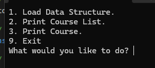
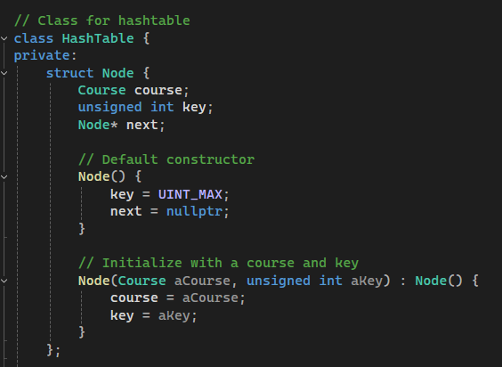
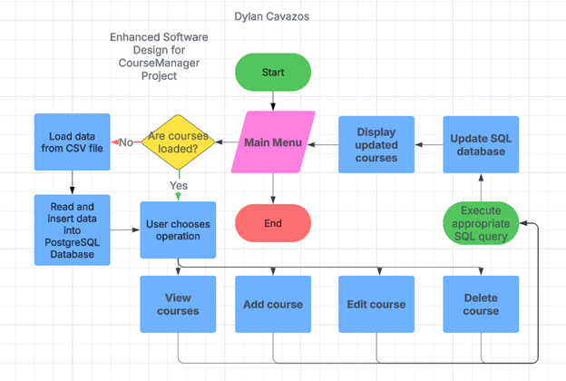
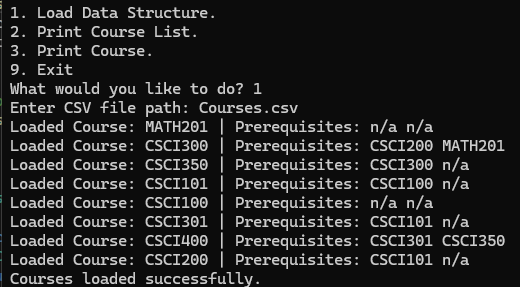
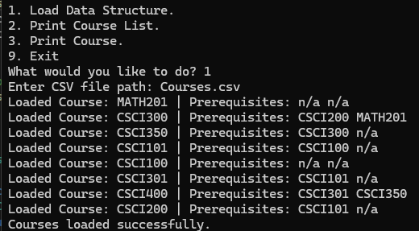

Table of Contents
Throughout my journey in the Computer Science program at Southern New Hampshire University, I’ve developed a strong foundation across multiple areas of computer science, including software design, software security, embedded systems, machine learning, full-stack development, and reverse software engineering. These experiences have helped shape me into a confident developer with a versatile skill set, sharpened my problem-solving abilities, and reinforced the professional values essential for success in the field.
This program has played an important role in shaping my career goals by reinforcing the values that matter to me professionally, for instance, writing professional quality code that is maintainable and secure, as well as succeeding in a collaborative environment that reinforces team building and problem solving.
The artifacts in this ePortfolio reflect the journey I’ve taken, but I’ve also worked on many other projects that have pushed me to apply what I’ve learned in meaningful ways. For example, in my Full-Stack Development course, I built a web application called Travlr Getaways using the MEAN stack-MongoDB, Express, Angular, and Node.js. This gave me valuable experience with APIs, routing, and persistent and secure data storage by allowing me to build a fully dynamic web application with both front-end and back-end components.
Another project that was indicative of the computer science journey here at SNHU was my project in building a 3D graphic application created using OpenGL. This project involved rendering real-world objects using vector math and taught me how to think spatially and apply problem-solving to build a visual complex system.
A valuable aspect of this program was the opportunity to collaborate with fellow students, fostering an environment of teamwork and problem-solving. I regularly contributed by offering troubleshooting support, sharing design strategies, and assisting with application challenges, and helping others communicate technical ideas more clearly and effectively.
Throughout the program, there were three main areas that were emphasized- data structures and algorithms, software engineering, and databases. Gaining experience in each of these areas I am better able to understand and evaluate the trade-offs between different data structures and identify the right one for the problem at hand. For instance, I used binary search trees for organizing course data and implemented in-order traversal to keep everything sorted and easily accessible. This was part of the enhancement in my artifact, which originally utilized a Hash Table to compute a hash that would store courses in the course manager application.
For software engineering, I gained hands-on experience with the full software development-lifecycle, including planning, designing, writing pseudocode, building, testing, and refining. Moreover, I created UML diagrams, wrote unit tests, and implemented defensive secure coding techniques like utilizing an Advanced Encryption Standard-256 and common vulnerability analysis. This helped me to start prioritizing security earlier in development, emphasizing the importance of secure software development across the domain of software engineering.
For databases, I’ve worked with both structured and unstructured data. For example, I used MySQL and PostgreSQL in projects that required relational data models and MongoDB when needing to work with more flexible unstructured data models. This allowed me to practice implementing parameterized queries to avoid SQL injection attacks, reinforcing the importance of data security across applications.
In this ePortfolio, I present multiple artifacts that demonstrate the culmination of my skills gained in the computer science program. The first artifact I constructed was the Course Manager application originally developed in C++, rewriting it in Python to improve readability, structure, maintainability, and apply more object-oriented principles. The second artifact is from the Data Structures and Algorithms section, where I developed a fully functional binary search tree that stores and organizes course data, while utilizing in-order traversal, insertion, searching, and deletion. Lastly, I used PostgreSQL to integrate a database for persistent data storage with the Course Manager project, providing real-time updates of course information, and allowing users to perform full CRUD operations using Python and the psycopg2 library.
These artifacts showcase the culmination of skills and techniques I’ve gained while attending the computer science program here at SNHU. By designing and building real-world applications and also solving complex, practical problems with modern computer science principles, I’ve grown into a confident and capable motivated individual, intent on transitioning into software development. I look forward to applying these skills in a professional setting and continuing to contribute to innovative and impactful technology solutions.

During my code review I analyzed the preexisting code structure for the Course Manager project, and described how my planned enhancements would improve upon the original project. I also identify the existing weaknesses, limitations, and vulnerabilities that are inherent throughout. I also cover what the code does, the existing features and functions, along with targeted areas of improvement related to the structure, logic, efficiency, functionality, security, testing, commenting, and documentation that accompanies it. The enhancements cover the three categories Including software design and engineering, data structures and algorithms, and databases.
The Course Manager project from my CS 300 Data Structures and Algorithms course was the project that I selected for each of the three artifacts and enhancements.
This program was initially developed in C++ and would load data from a CSV file, containing the relevant student course information such as the Course ID, Course Title,
and any prerequisites. I selected this project for my artifact because I wanted to enhance the overall software design of the program, improve the performance of loading and
querying course data, introduce CRUD operations for user management, and create a seamless experience for a user.
CS 300 DSA-Analysis-and-Design Repository



The original Course Manager project was a command-line application developed in C++ as part of my Data Structures and Algorithms course.
It allowed users to load course data from a CSV file, store it in a hash table, and retrieve individual courses by searching via Course ID. Each course contained its unique Course ID,
title, and list of prerequisites. The structure was an efficient way to determine course relationships, but the original codebase lacked flexibility and wasn't as scalable.
For this enhancement, I chose to rebuild the application from the ground up in Python, as I wanted more practice in this language-known for its readability, maintainability, and inclusion in modern software development.
I also wanted to focus on enhancing the original software design structure and incorporate object-oriented programming principles, like separating the core logic into multiple classes to promote a more scalable and modular architecture.
Instead of the Hash Table, I chose to utilize Python's built-in dictionary to manage the course data, which offers similar performance but with cleaner syntax and easier data manipulation. The inclusion of the dictionary is for the first planned
enhancement, which is later replaced in the second enhancement with a Binary Search Tree for improved structure and efficiency. Below I have my enhancement for this portion along with a flowchart developed showing the
complete structure and logic of the application.
See Enhancement Here

Originally, the Course Manager application was developed using a Hash Table data structure with a hashing algorithm, which utilized a hashing function to compute the index for storing each Course ID. If multiple Course IDs produced the same hash a collision would occur, the application resolved it by using a linked list at that index to store all colliding entries. A while loop would then traverse the linked list to find an available node for insertion or to retrieve a specific course.
I selected this project as my Data Structures and Algorithm artifact to improve search efficiency by replacing the Hash Table with a Binary Search Tree (BST). The BST enhancement offers improved time complexity in certain scenarios and eliminates the need for collision resolution,
allowing for more predictable and structured traversal of course data.
See Enhancement Here

The Course Manager project initially loaded course data from a CSV file. This required the CSV data to be loaded each time the application was used and also required an absolute path when loading the courses to the Hash Table.
This also meant that any changes to the course data were not persistent and would require reloading upon restarting the application. In my enhancement for the Database artifact I introduced a relational database to store the course data,
and because I converted the program to Python I selected a PostgreSQL database to interface directly with the Python application using the psycopg2 library. This enabled more secure and persistent data storage, while still
allowing a user to load course data from a CSV file should they choose.
See Enhancement
 

GitHub Repository
Check out my GitHub repository below!